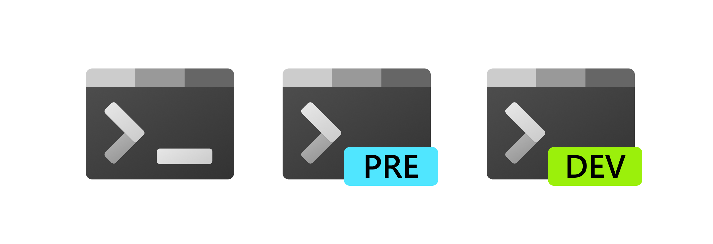

Terminal
Hier ga ik het hebben over commands en verschillende terminals voor Windows en Linux. Wees niet geïntimideerd door de terminal. Als je een beetje weet wat je doet is het niet zo moeilijk.
Windows debloaten
Windows debloated kan met het volgende command (via windows powershell + moet als admin):
irm christitus.com/win | iex
Dit is een temporary file en verandert alleen dingen als je dat wilt. Dus wel oppassen met wat je aanklikt!
Windows Terminal
De Windows Terminal wordt al automatisch geïnstalleerd op elke Windows pc. Hiermee bedoel ik niet CMD of PowerShell. In Windows Terminal is een "terminal emulator" en je kunt kiezen tussen bijvoorbeeld CMD of PowerShell. PowerShell heeft veel meer opties en is in mijn optiek een betere keuze.


Termux
Termux is een terminal emulator voor android.

Scoop, Chocolatey en Winget
Scoop, Chocolatey en Winget zijn package managers voor Windows. Ze kunnen allemaal packages ("programma's") installeren/verwijderen en updaten.
De commands van Chocolatey zijn: choco install "app naar keuze" (om een app te installeren), choco upgrade all (op te updaten) en choco uninstall "app naar keuze" (om een app te deinstalleren).
De commands voor scoop zijn: scoop install "app naar keuze" etc.
Winget is precies hetzelfde: winget install "app naar keuze", winget upgrade --all etc.
Kijk ook op de websites voor meer informatie of je kan meestal --help/-h doen als je het niet meer weet.